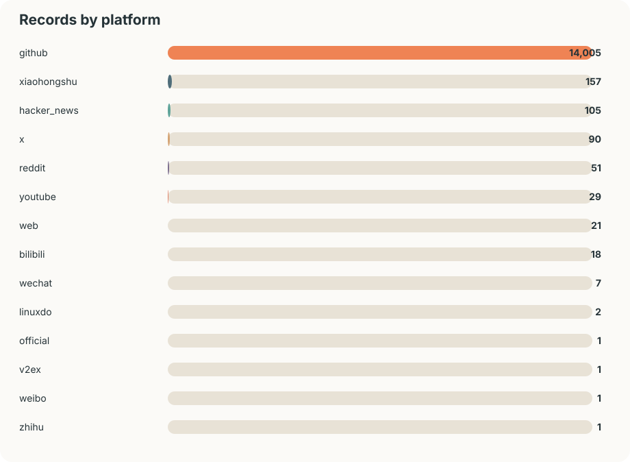
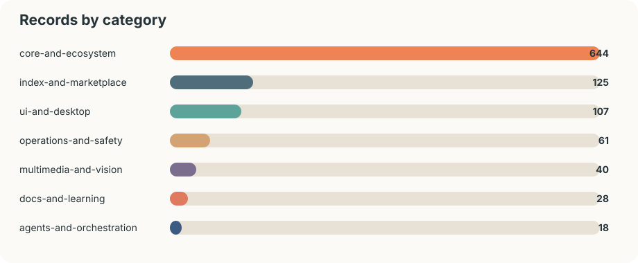
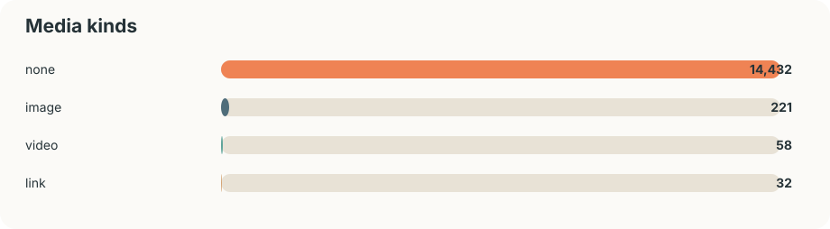
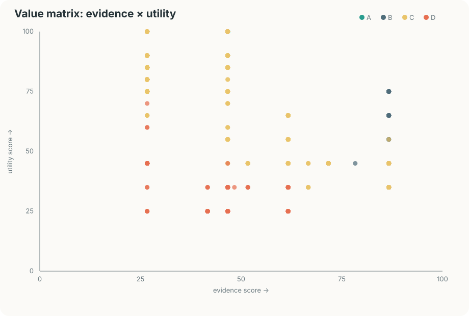

github · core-and-ecosystem
ollama/ollama
ollama · 178,537 ★, 17,409 forks
把仓库、帖子、笔记、视频与互动指标放进同一个可回溯索引。Setup 是生态出现，Conflict 是平台指标不可直接相加，Resolution 是保留原始证据并按来源观察变化。




GitHub 反映可复用代码与生态基础设施，HN 反映开发者讨论，X 与小红书反映传播和教程扩散，YouTube 反映长视频解释与实测。它们是不同的信号，报告只在各自平台内比较。
价值矩阵把可用性、证据、生态连接、新鲜度和可审查材料与平台内热度分开，优先提示“值得复核”的记录；它不把不同平台的数字相加，也不替代代码安全审计。
指标为采集时快照；外部媒体只保存链接和缩略图地址，不镜像受版权保护的内容。
ollama · 178,537 ★, 17,409 forks
Graphify-Labs · 106,471 ★, 10,362 forks
deepseek-ai · 104,848 ★, 10,017 forks
nexu-io · 86,590 ★, 10,092 forks
bytedance · 80,032 ★, 10,952 forks
shareAI-lab · 74,276 ★, 12,028 forks
shanraisshan · 64,489 ★, 6,406 forks
rust-unofficial · 58,838 ★, 3,538 forks
CherryHQ · 50,496 ★, 4,782 forks
diegosouzapw · 48,211 ★, 6,546 forks
hugohe3 · 46,958 ★, 3,809 forks
Imbad0202 · 42,534 ★, 3,388 forks
value 78.16 · ui-and-desktop
value 77.52 · multimedia-and-vision
value 77.00 · core-and-ecosystem
value 76.74 · ui-and-desktop
value 75.21 · index-and-marketplace
value 74.77 · ui-and-desktop
value 74.39 · ui-and-desktop
value 74.19 · core-and-ecosystem
value 74.17 · ui-and-desktop
value 73.77 · core-and-ecosystem
value 72.91 · multimedia-and-vision
value 72.72 · core-and-ecosystem
执行 python3 scripts/collect.py update --raw path/to/egolite.json，再执行 python3 scripts/build_value_matrix.py、python3 scripts/build_index.py 和 python3 scripts/build_views.py。每次更新都会保留 API 原始快照和指标观测时间。